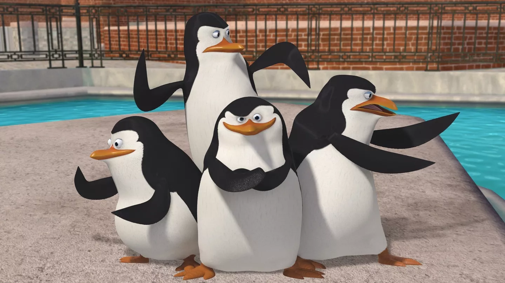

Opis Kawazakiego (Kowalskiego)
Kowalski – zastępca a zarazem doradca Skippera, przez którego często
proszony jest o podanie możliwych rozwiązań problemu, z którym akurat się
mierzą (cyt. Kowalski opcje! lub Kowalski analiza proszę!). Najbardziej inteligentny
spośród mieszkańców zoo. Jest naukowcem i uzdolnionym wynalazcą, jednak tworzone przez niego
wynalazki, najczęściej powodują więcej problemów niż pożytku. Uważa, że każdy problem da
się wyjaśnić i rozwiązać metodą naukową i nie wierzy w zjawiska paranormalne. Mimo swojej inteligencji,
tak jak większość mieszkańców zoo nie potrafi czytać i pisać. Notatki sporządza za pomocą piktogramów,
a obliczeń dokonuje liczydłem. Jest zakochany bez wzajemności w delfinicy Doris.
Kim on jest?
Jako, że jest jedynym pingwinem posiadającym zdolność myślenia, jego praca w zespole polega przede
wszystkim na opracowywaniu planów taktycznych i raportów, mimo bycia analfabetą. Omija jednak tą
niedogodność dzięki talentowi plastycznemu, umożliwiającym mu rysowanie skomplikowanych wykresów.
Oprócz tego Kowalski tworzy wynalazki, najczęściej służące do tego żeby rozwalić cały odział były.
Często jest nierozumiany przez resztę zespołu, zwłaszcza gdy nawet jego przepis na gofry jest
przepełniony bełkotem pseudonaukowym. Może to spowodować alienację Kowalskiego i jego samobójstwo

Pingwiny z Madagaskaru